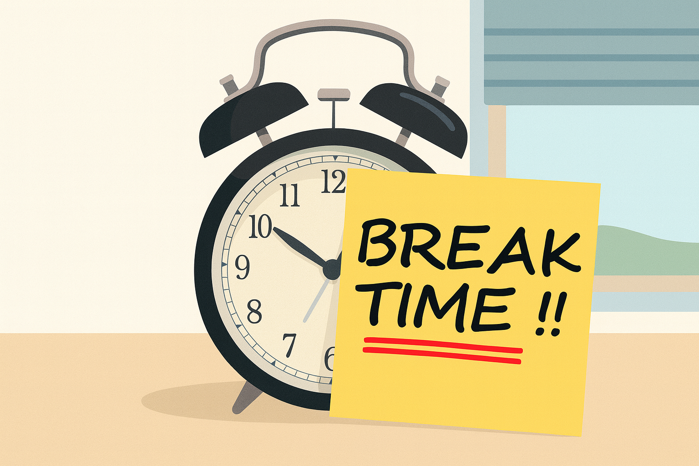
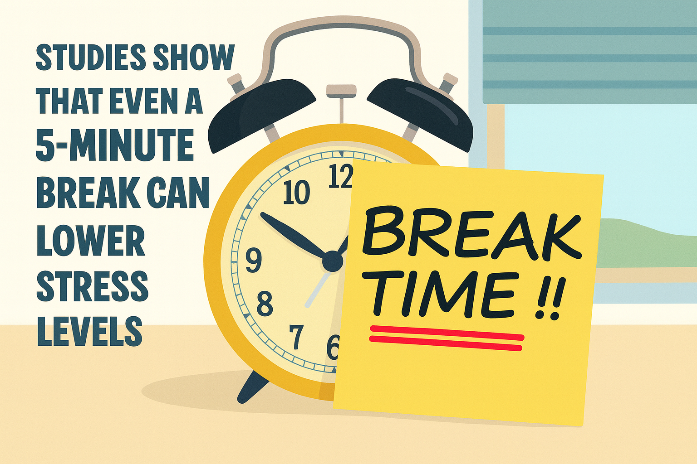

Why Short Breaks Matter
|
Taking short breaks throughout your workday isn’t a waste of time. It’s a proven strategy to boost focus and overall well-being.
|
  |
Streches You Can Do At Work
Take 1 or 2 minute breaks every hour. Stretch your neck/shoulders and breathe slowly.
|
Yoga is one of the most effective ways to relax muscles tightened by tension. However, if you can’t roll out a yoga mat in your office, here’s a link to a simple indoor workout you can do right at your desk. Relaxing Stretching Workout for Stiff Muscles & Stress Relief (6 min.) |